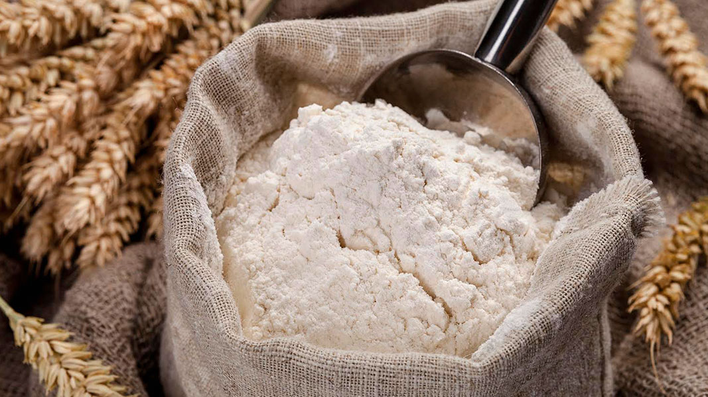

Наблюдения показывают, что пшеничная мука высшего и 1-го сортов непосредственно после выбоя не обладает еще в полной мере хлебопекарными качествами и приобретает их лишь после выдерживания в сухом складе в течение некоторого времени. Такой процесс носит название созревания муки. Считают, что пшеничная мука высоких сортов требует для созревания около 30 дней. Мука пшеничная 2-го сорта и обойная, а также все сорта ржаной муки вылежки на складе не требуют. Относительно предельного срока хранения муки твердо обоснованных данных не имеется, но известно, что в течение двух лет при надлежащем хранении мука сохраняет свои качества.
Свежая мука обладает слабым, свойственным ей запахом - мне он очень нравится, мука приятно пахнет. Затхлый и кислый запах муки указывает на то, что она испорчена или получена из несвежего зерна.
Мука обладает свойством поглощать посторонние запахи. Именно
поэтому мне совершенно больше не хочется покупать муку, особенно в
магазинах здорового питания (тут нет никаких гарантий) - неизвестно где
хранились ни мука, ни зерно, а это ОЧЕНЬ сильно влияет - лично
проверено. Муку, которая не там где надо хранилась - есть невозможно,
неприятно.
Для обнаружения запаха небольшое количество муки согревают на ладони дыханием и затем определяют запах. Можно также насыпать муку в стакан, облить горячей водой (60°), накрыть, дать постоять 2—3 минуты, слить воду и определить запах.
Мука нормального качества имеет при разжевывании слабосладковатый, почти пресный вкус. Слабокислый привкус указывает уже на несвежесть муки, а явно кислый или горький вкус — на то, что мука испорчена. Горьковатый вкус может вызываться также присутствием в зерне, из которого мука получена, таких примесей, как полынь, вязель и др. Сладковатый привкус имеет мука из проросшего, а также из морозобойного зерна.
Влажность муки имеет большое значение. Мука сухая (до 14%) хорошо сохраняется в течение года. Мука средне-сухая (14,5—15,5%) может храниться только в прохладные месяцы года, а мука влажная (15,5—17%) —только в зимнее время. В теплые месяцы такая мука слеживается в комья, самосогревается, в ней легко размножаются амбарные вредители, развиваются плесени и бактерии. Сухая мука в процессе изготовления печеного хлеба обладает лучшей набухаемостью; тесто из нее не прилипает.
Зольность муки. Основным показателем сорта муки у нас служит зольность. Для каждого сорта муки стандартом и временными техническими условиями установлена определенная зольность в пересчете на сухое вещество муки. Определение зольности производится в лабораториях путем сжигания в предварительно прокаленном и взвешенном тигле 1,5—3 г муки.
КлейковинаСодержание клейковины в пшеничной муке
Клейковина получается в виде вязкой, клейкой массы при промывании водой теста из пшеничной муки. Это т.н. сырая клейковина, она содержит 60— 70% воды и 40—30% сухого вещества. При высушивании сырой клейковины получают сухую клейковину, которая на 80— 85% состоит из белков. Количество и качество клейковины оказывают большое влияние на хлебопекарную способность муки - это знают все хозяйки, кто печёт дома.
Содержание в муке свыше 35% сырой клейковины считают высоким, менее 20% — низким. На количество клейковины оказывает влияние качество зерна: твердые пшеницы и мягкие стекловидные характеризуются более высоким содержанием клейковины.
Разные сорта муки из одного и того же зерна содержат различное количество клейковины неодинакового качества. С увеличением выходов муки повышается содержание клейковины и одновременно понижается ее качество. При выходе муки при помоле свыше 75% содержание клейковины в муке понижается, так как здесь уже сказывается влияние отрубных частей муки.
Хорошая клейковина имеет белый цвет с желтоватым оттенком, плохая клейковина — темный цвет с сероватым оттенком. Хорошая клейковина упруга (при деформации быстро принимает прежнюю форму), к рукам не липнет, при растягивании не обрывается сразу и не слишком растягивается (нормальное растяжение примерно на 10 см для клейковины из 10 г муки). Плохая клейковина липнет к рукам, при растягивании тянется в длинные нити (более 15 см) или, наоборот, имеет губчатое строение, при растягивании обрывается. Хорошая клейковина удерживает 65—70% воды, т. е. отношение веса сырой клейковины к весу сухой равно 2,5 —3.
Плохой клейковиной характеризуется мука из зерна проросшего, морозобойного (т. е. захваченного на корню морозом) и поврежденного в поле жуком, клопом-черепашкой.
Примесь к пшенице ржи при помоле свыше 10% также понижает количество и качество клейковины. Мука из зерна, подвергшегося самосогреванию или пересушенного (при температуре выше 70°), совсем не дает клейковины. Добавка в тесто сахара, соли, слабых кислот оказывает укрепляющее действие на качество отмываемой клейковины.
При хранении муки (особенно в неблагоприятных условиях) в ней могут развиваются плесени и бактерии, а также проходят ферментативные процессы распада веществ, и это ведет к накапливанию в муке веществ кислотного характера. Резко повышенная кислотность муки служит более объективным признаком ее несвежести, чем изменение запаха и вкуса.
Мука пшеничная первых сортов с кислотностью выше 4—5° уже подозрительна по свежести, так же, как и мука 2-го сорта, кислотность которой выше 7°.
Кислотность муки выражают в градусах кислотности. Градусы показывают, сколько кубических сантиметров нормального раствора щелочи требуется для нейтрализации кислот, содержащихся в 100 г муки. Мука пшеничная свежая высшего и 1-го сортов имеет кислотность не выше 3°, мука 2-го сорта и обойная — не более 5°.
Вредные примеси в муке
К таким примесям относят спорынью, головню, горчак, вязель, куколь. Содержание головни, спорыньи, горчака и вязеля вместе должно быть не более 0,05% (в том числе горчака и вязеля не свыше 0.04%). Куколя допускается не более 0,1%.
Примеси ржаной и ячменной муки допускается в пшеничной муке до 5%. Муки из проросшего зерна может быть до 3%. Все эти примеси определяются путем анализа зерна на мельницах после очистки его на машинах перед помолом.
Хлебопекарные свойства муки
Под хлебопекарными свойствами понимают способность муки давать достаточное количество хлеба хорошего требуемого качества. При этом учитывают и поведение теста при переработке (замесе, брожении, разделке, выпечке). Хлебопекарные свойства определяют пробной выпечкой в лабораторных печах по специальной методике при постоянном качестве дрожжей и определенной рецептуре теста.
Выпекают хлеб двух видов: в формах (формовой) и на листе в виде круглого хлеба (подовый).
Полученный формовой хлеб взвешивают — узнают выход хлеба, а по
охлаждении определяют его объем. Вычисляют выход и объем хлеба из 100 г
муки на сухое вещество.
В подовом хлебе измеряют диаметр (по нижней корке) и высоту хлеба.
Отношение высоты к диаметру подового хлеба характеризует качество муки.
Хорошая мука дает около 400 мл формового хлеба, а отношение высоты к
диаметру у подового хлеба из нее равно 0,40—0,45.
До некоторой степени о хлебопекарных качествах муки можно судить по количеству и качеству клейковины и по содержанию ферментов в муке.
Хранение мукиПомещения для хранения муки должны быть сухими, светлыми, иметь хорошую вентиляцию. Полы должны быть без щелей, лучше делать их асфальтированными или цементированными. Все помещение необходимо содержать в образцовой чистоте, постоянно обметать в нем пыль и паутину, потолки и стены белить не реже двух раз в год.
Мука обычно поступает на хранение в мешках (средним весом по 75-80 кг), которые укладывают для хранения в штабели. Мешки следует укладывать на подтоварники (расстояние от пола не менее 15 см). От наружных стен штабели должны отстоять не менее чем на 0,75 м, между штабелями следует оставлять проходы не менее 0,5 м. Мешки укладывают зашивкой внутрь штабеля. Штабель может состоять из 6—12 рядов мешков в вышину, в зависимости от времени года и качества продукции.
Во время хранения надо вести надзор, не допускать увлажнения муки, самосогревания, появления запахов, амбарных вредителей. Для этого проверяют температуру (ощупыванием рукой или термометром) и отпотевание мешков. В сомнительных случаях необходимо устанавливать влажность, вкус и запах продукта.
При обнаружении начавшегося самосогревания муки рекомендуются следующие меры: 1) перекладка штабелей, причем число рядов в вышину следует уменьшить; 2) расстановка мешков в стоячем положении; 3) расшивка мешков и просеивание продукта через крупное сито, или грохот.
При обнаружении вредителей надо просеять муку и затарить ее в чистые мешки.
При длительном хранении муки в ней происходят такие изменения:
1) изменяется влажность продуктов, причем это зависит от природы и
влажности самого продукта, а также от относительной влажности воздуха и
температуры на складе;
2) повышается кислотность муки и особенно кислотность ее жира; происходит окисление жира и наблюдается прогоркание продуктов;
3) в муке наблюдается изменение цвета - она становится белее;
4) изменяется качество клейковины муки, она делается более крепкой,
менее растяжимой и более эластичной; для муки, имеющей слабую
клейковину, это полезно;
5) изменяется активность ферментов; непосредственно после помола активность ферментов бывает обычно повышена.
Источник информации: